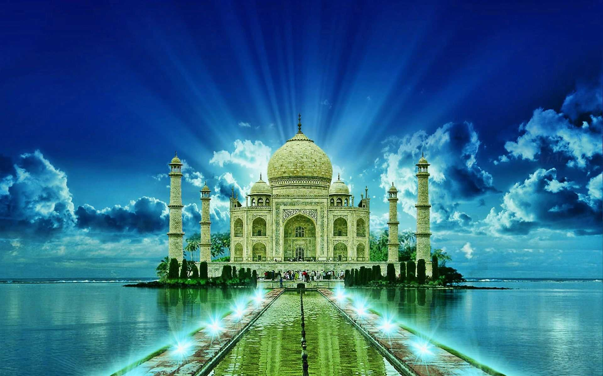
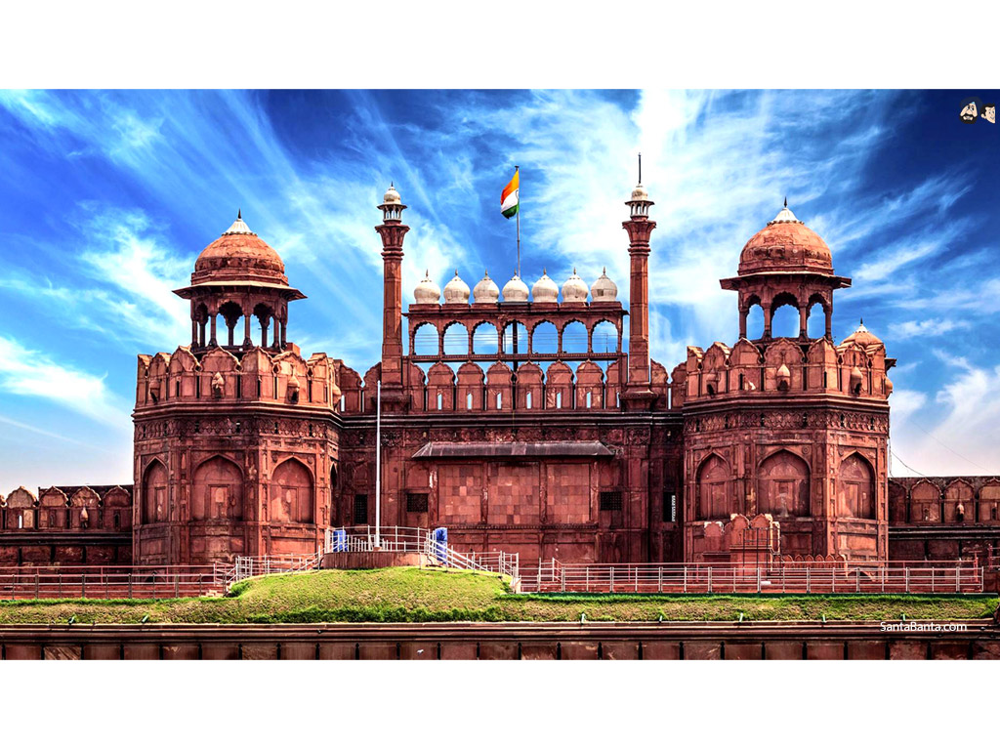
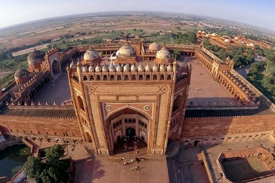
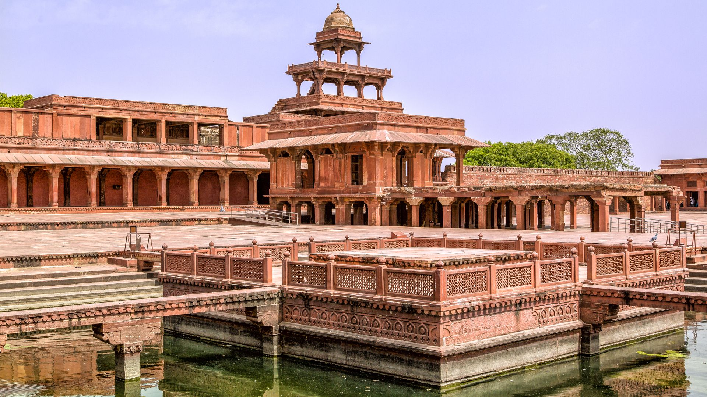
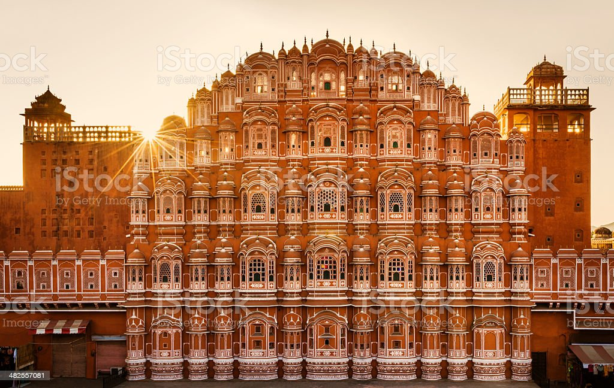
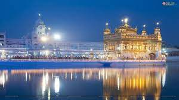
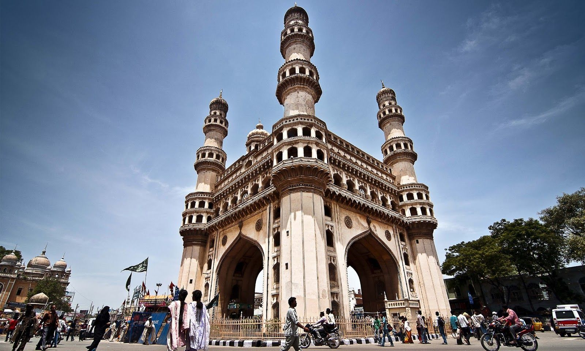

An immense mausoleum of white marble, built in Agra between 1631 and 1648 by order of the
Mughal
emperor Shah Jahan in memory of his favourite wife, the Taj Mahal is the jewel of Muslim art in
India and one of the universally admired masterpieces of the world's heritage.

Qutub Minar
Qutub Minar History
Qutab Minar is a soaring, 73 m-high tower of victory, built in 1193 by Qutab-ud-din Aibak
immediately after the defeat of Delhi's last Hindu kingdom. The tower has five distinct storeys,
each marked by a projecting balcony and tapers from a 15 m diameter at the base to just 2.5 m at
the top.
Red Fort
Red Fort History
The Red Fort Complex was built as the palace fort of Shahjahanabad – the new capital of the
fifth Mughal Emperor of India, Shah Jahan. Named for its massive enclosing walls of red
sandstone, it is adjacent to an older fort, the Salimgarh, built by Islam Shah Suri in 1546,
with which it forms the Red Fort Complex.

Fatehpur Sikri

Fatehpur Sikri History
Built during the second half of the 16th century by the Emperor Akbar, Fatehpur Sikri (the
City of Victory) was the capital of the Mughal Empire for only some 10 years. The complex of
monuments and temples, all in a uniform architectural style, includes one of the largest mosques
in India, the Jama Masjid.

Hawa Mahal
Hawa Mahal History
Hawa Mahal was built by Kachhwaha Rajput ruler Maharaja Sawai Pratap Singh in the year 1799.
When the maharaja saw the structure of Khetri Mahal in Jhunjhunu, Rajasthan, he was so impressed
that he decided to build a palace modeled on it. Hawa Mahal, also called the Palace of Breeze,
was the result of that inspiration.

Golden Temple
Golden Temple History
Maharaja Ranjit Singh, after founding the Sikh Empire, rebuilt it in marble and copper in
1809, and overlaid the sanctum with gold leaf in 1830. This has led to the name the Golden
Temple. The Golden Temple is spiritually the most significant shrine in Sikhism.

Char Minar

Char Minar History
The Charminar was established more than four centuries ago by the fifth Sultan of the Qutb
Shahi dynasty, namely Sultan Muhammad Quli Qutub Shah. He commissioned the construction of this
grand mosque in the year 1591 after he shifted his capital from Golconda to Hyderabad, which was
a newly formed city.
Sanchi Stupa
Sanchi Stupa History
The Great Stupa at Sanchi is one of the oldest stone structures in India, and an important
monument of Indian Architecture. It was originally commissioned by the Mauryan emperor Ashoka
the Great in the 3rd century BCE. Its nucleus was a simple hemispherical brick structure built
over the relics of the Buddha.